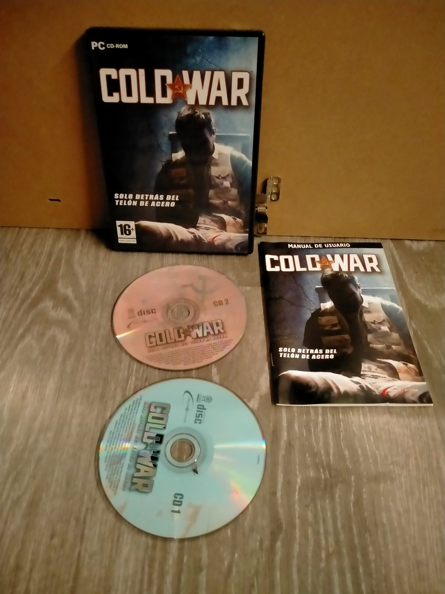

Ficha #000000
Cold War
Juego de acción y sigilo ambientado durante la Guerra Fría en el que el jugador encarna a Matthew Carter, un periodista estadounidense que se ve envuelto en una conspiración internacional tras viajar a Moscú para investigar un reportaje. Tras ser capturado por el KGB, Carter debe escapar y descubrir una trama secreta relacionada con experimentos mentales y control psicológico. El juego combina infiltración, uso de gadgets improvisados y resolución de situaciones mediante diferentes enfoques mientras el protagonista intenta sobrevivir tras el Telón de Acero.
- Formato
- DVD Case
- Plataforma
- Win2000 WinXP
- Género
- Acción Sigilo Espionaje
- Serie
- Todos DVD Case
- Desarrollador
- Mindware Studios
- Distribuidor
- DreamCatcher Interactive
- EAN
- —
Contenido de la edición
- Pendiente de documentación.
Preservación
- Protección
- No determinado
- Formato recomendado
- No aplica
- Jugable en virtualización
- No determinado
Pendiente de documentación